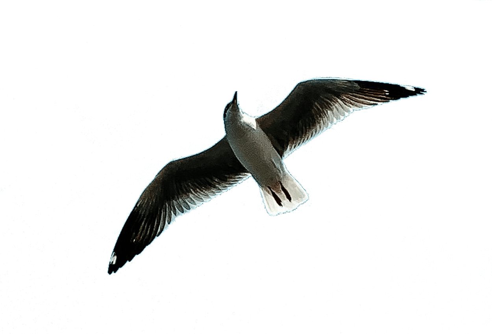
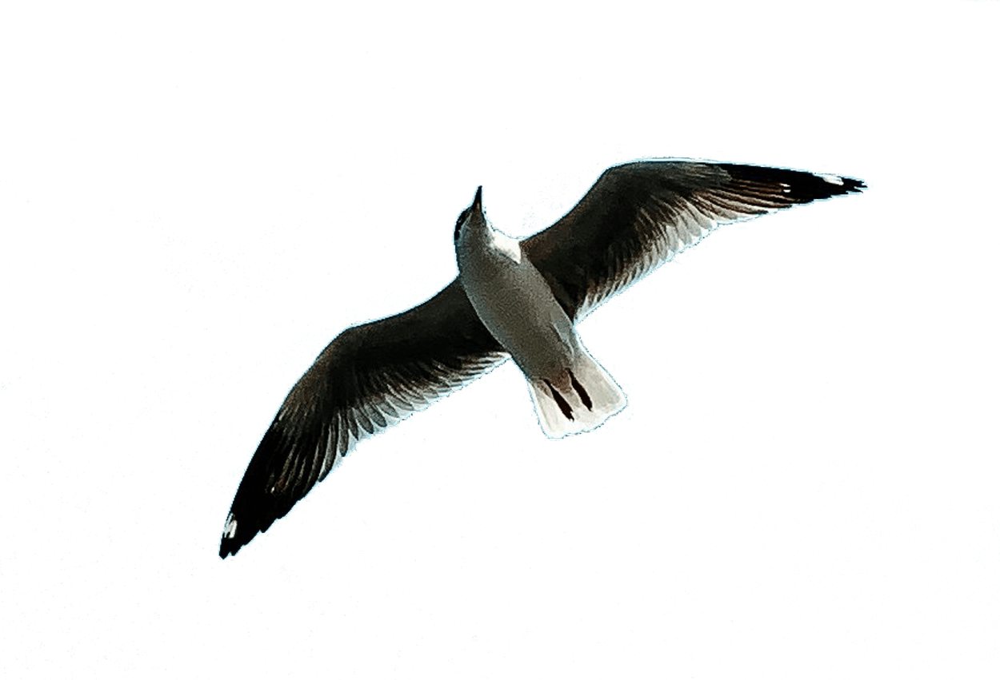
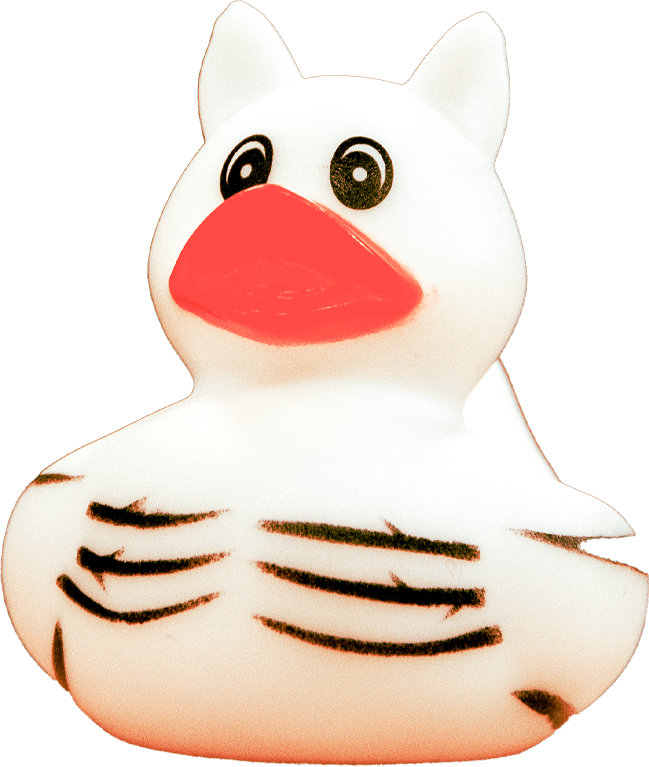
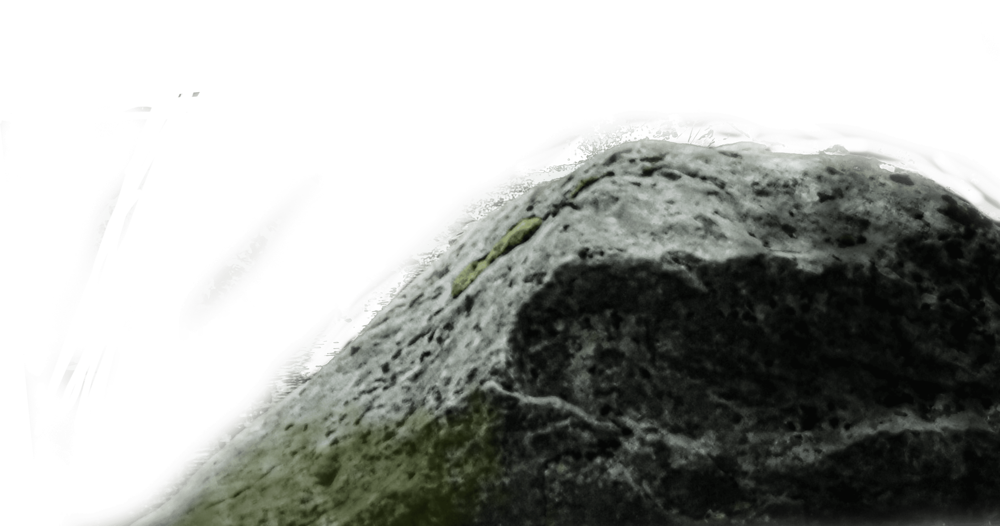
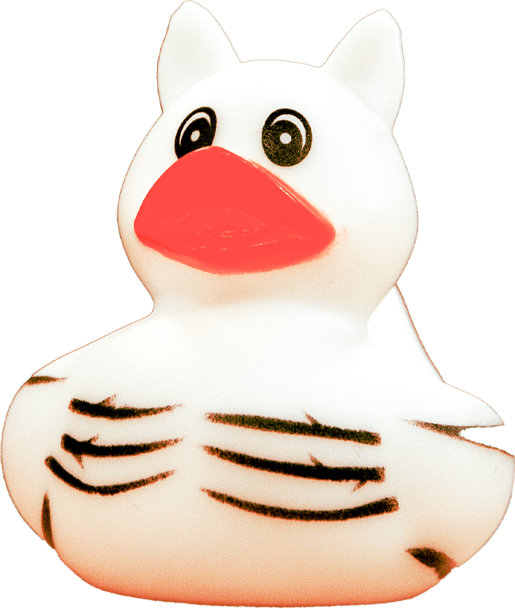
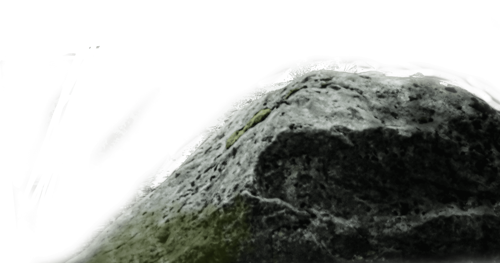

Ik ben begonnen met een opleiding tot front-end developer. Hier heb ik veel geleerd over het ontwikkelen van websites en webapplicaties.
 

 



Hi, ik ben
Kevin Boere
Carriere
De weg die ik tot nu to heb gewaggeld
Ik ben begonnen met een opleiding tot grafisch vormgever. Hier heb ik veel geleerd over het ontwerpen van logo's, huisstijlen en websites.
Ik ben begonnen met een opleiding tot grafisch vormgever. Hier heb ik veel geleerd over het ontwerpen van logo's, huisstijlen en websites.
Projecten
De projecten waar ik aan heb gewerkt

Eendenwaardering Website
Creëer een charmante website gewijd aan het vieren van de schoonheid en het belang van eenden in verschillende ecosystemen. Integreer interactieve functies zoals eendenweetjesquizzen, fotogalerijen van verschillende eendensoorten en een forum voor eendenliefhebbers om verhalen te delen en tips over eendenverzorging uit te wisselen.
Eenden-thema E-commerce Winkel
Ontwikkel een e-commerce website gespecialiseerd in eenden-thema merchandise, waaronder kleding, accessoires en artikelen voor in huis. Implementeer een gebruiksvriendelijke interface met categorieën zoals "Eendenling Benodigdheden" en "Eigenzinnige Eenden Geschenken".
Virtuele Eenden Vijver Simulator
Ontwerp een speelse website met een virtuele eenden vijver simulator game waar gebruikers kunnen interacteren met virtuele eenden, ze voeren en hun leefomgeving aanpassen.
Interactie
Mij van dichtbij willen bekijken? interacteer met mij!
Contacteer mij
Heb je een vraag of wil je gewoon even hallo zeggen? Neem dan contact met mij op via de onderstaande knop.